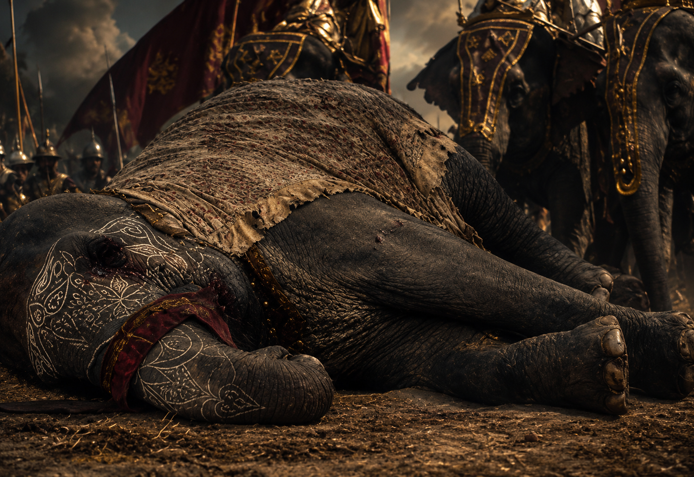
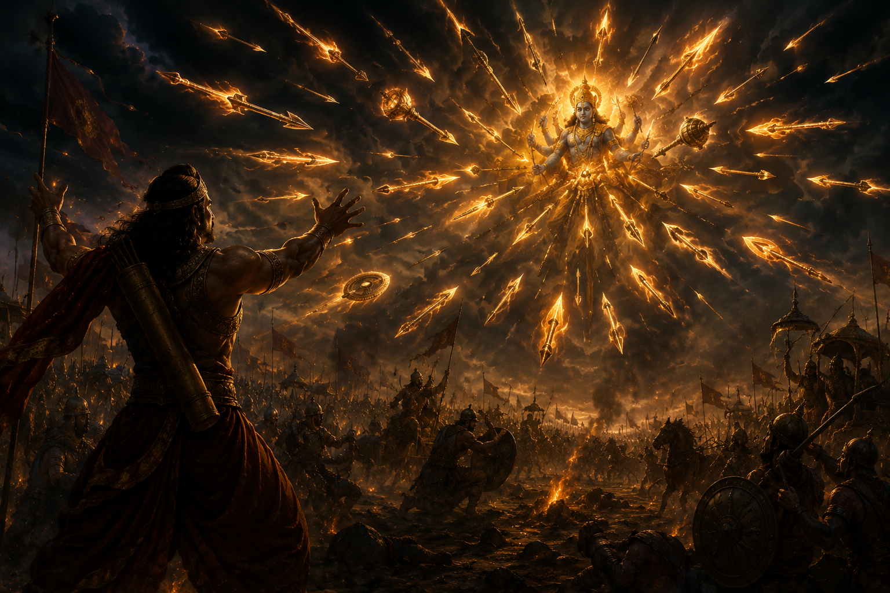
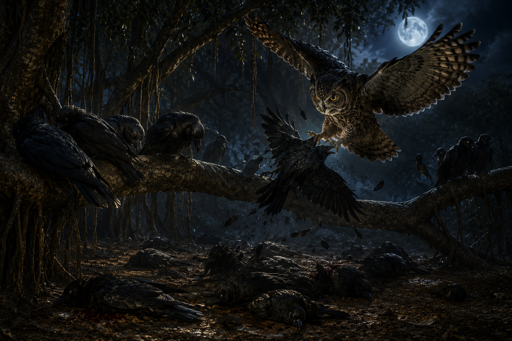
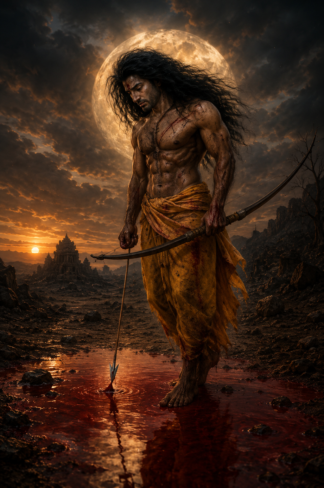

Among all the great warriors of the Mahabharata, few lives are as mysterious, tragic, and controversial as that of Ashwatthama, the son of Guru Dronacharya.
He was not only an extraordinary archer but also a master of celestial weapons, a mighty warrior believed by many traditions to be a partial manifestation of Lord Shiva, and one of the few figures remembered among the Chiranjivis—those destined to live through the ages.
Yet, unlike others, his immortality became less of a blessing and more of a terrible curse.
Ashwatthama's father was the revered sage Dronacharya, regarded as the greatest teacher of military science in all of Aryavarta. His mother was Kripi, the sister of Kripacharya.
Although Dronacharya possessed unmatched knowledge of warfare and the scriptures, he lived a life of extreme poverty.
When Ashwatthama was born, the family's financial condition was so difficult that there were times when they could not even afford milk.
According to the tradition, one day the young Ashwatthama saw other children drinking milk and innocently asked his mother for some.
Unable to provide it, Kripi mixed flour with water and offered it to him as though it were milk.
The child accepted it happily, unaware of the truth.
But Dronacharya's heart was shattered.
For the first time, he truly felt the humiliation of his poverty.

That single moment changed the course of Dronacharya's life.
He resolved that his knowledge would no longer remain without recognition or honor.
This determination eventually led him to Hastinapura, where he became the royal teacher of both the Kauravas and the Pandavas.
Ashwatthama himself was no ordinary child.
According to the Mahabharata, at the moment of his birth he cried with the loud neigh of a horse.
Because of this extraordinary sound, he was given the name Ashwatthama, meaning "one whose voice resembles that of a horse."
He was also born with a radiant celestial jewel embedded in his forehead.
It is said that this divine jewel protected him from hunger, thirst, disease, poison, evil spirits, and many unseen dangers. On the battlefield, it also granted him exceptional strength and endurance.

From an early age, Ashwatthama learned archery, warfare, and the use of divine celestial weapons directly from his father.
He grew into a brilliant, fearless, and immensely powerful warrior, though he was also known for his pride and fierce temperament.
While the Pandavas and the Kauravas trained under Dronacharya, Ashwatthama practiced alongside them.
Among all the students, both Arjuna and Ashwatthama were regarded as exceptional archers.
Dronacharya cared deeply for every one of his disciples, yet as a father, his affection for Ashwatthama was naturally greater.
Years passed.
The princes became warriors, and the chain of events that would ultimately lead to the great Kurukshetra War unfolded.
When the war finally began, Ashwatthama chose to fight alongside the Kauravas, standing beside his father.
He firmly believed that as long as mighty warriors like Bhishma and Dronacharya remained alive, no force on earth could defeat the Kaurava army.
He did not yet know that a single event was about to change his destiny forever.
The Kurukshetra War raged on for many days.
Countless mighty warriors had already fallen on both sides of the battlefield.
Bhishma Pitamaha now lay upon his bed of arrows, and after his fall, the command of the Kaurava army was entrusted to Guru Dronacharya.
Dronacharya was not merely a revered teacher—he was one of the greatest warriors of his age. Few possessed knowledge of celestial weapons equal to his.
Once he assumed command, defeating him became nearly impossible for the Pandavas.
Wherever Drona advanced, destruction followed. Even the mightiest warriors struggled to withstand the relentless storm of his arrows.
Lord Krishna understood that as long as Dronacharya continued to fight with weapons in his hands, victory for the Pandavas would remain almost impossible.
Krishna therefore devised a strategy.
He knew that Dronacharya loved his son, Ashwatthama, more than anything else.
"If Drona becomes convinced that Ashwatthama has been killed," Krishna explained, "grief will compel him to lay down his weapons."
By coincidence, there was a mighty elephant in the Pandava army that also bore the name Ashwatthama.
Bhima slew the elephant and loudly proclaimed across the battlefield,
"Ashwatthama is dead! Ashwatthama is dead!"
Hearing these words, Dronacharya was deeply disturbed, yet he refused to believe them.
He knew his son was no ordinary warrior.
Seeking the truth, he turned toward Yudhishthira, whose commitment to truth was known throughout the world.
Drona asked,
"Tell me honestly, O Yudhishthira. Has my son Ashwatthama truly been slain?"
Yudhishthira found himself caught in a terrible moral dilemma.
On one side stood truth.
On the other stood the fate of the entire Pandava army.

At last, he answered,
"Ashwatthama is dead..."
Then, in a voice so soft that it could barely be heard, he added,
"...whether man or elephant, I do not say."
At that very moment, Lord Krishna blew His conch.
Its thunderous sound echoed across the battlefield, drowning out Yudhishthira's final words.
Dronacharya heard only,
"Ashwatthama is dead."
Believing that his beloved son had perished, Dronacharya was overcome with unbearable grief.
His desire to continue fighting vanished.
He laid aside his weapons, sat down upon the battlefield, closed his eyes, and entered deep meditation.
At that moment, Dhrishtadyumna, the son of King Drupada—who had been born for the very purpose of slaying Dronacharya—advanced toward him.
Arjuna desperately tried to stop him, calling out,
"Do not strike our unarmed teacher!"
But Dhrishtadyumna ignored his plea.
He killed the unarmed Dronacharya while the great master remained absorbed in meditation.

When news of his father's death reached Ashwatthama, his heart was consumed by grief, rage, and an overwhelming desire for revenge.
He became convinced that his father had been brought to death through deception rather than by honorable combat.
At that very moment, Ashwatthama swore a terrible vow.
He would avenge his father's death, no matter what boundaries he had to cross.
That oath would ultimately lead him toward an act so dreadful that it would curse him for the rest of eternity.
The death of Dronacharya shattered Ashwatthama completely.
His grief gradually transformed into an overwhelming rage.
He became convinced that the Pandavas had brought about his father's death through deception.
Now only one desire remained in his heart—
Revenge.
Immediately after Dronacharya's death, Ashwatthama unleashed one of the most terrifying celestial weapons ever known—the Narayanastra.
The moment it was released, the sky blazed with fire.
Countless flaming arrows, spinning discs, blazing maces, and divine weapons descended upon the Pandava army from every direction.
It seemed as though the very end of the world had arrived.

The Narayanastra possessed a unique and terrifying power.
The more a warrior resisted it, the stronger and more destructive it became.
Anyone who continued to hold weapons against it immediately became its target.
Panic spread throughout the Pandava army.
Many great warriors had no idea how such a weapon could possibly be countered.
At that moment, Lord Krishna immediately commanded the Pandavas and their entire army,
"Lay down your weapons. Step down from your chariots and stand upon the ground with complete humility. Do not resist this weapon."
Krishna knew that humility alone could neutralize the Narayanastra.
The Pandavas and most of their soldiers obeyed His command.
They laid down their weapons and stood peacefully upon the battlefield.
Bhima, however, refused.
"I will never throw away my weapons out of fear of any weapon!"
Grasping his mighty mace, he charged directly toward the celestial weapon.
Instantly, the entire fury of the Narayanastra focused upon Bhima alone.
Blazing flames and countless divine missiles rushed toward him from every direction.
His life hung by a thread.
Krishna and Arjuna immediately rushed to his side.
Together they forcibly pulled Bhima down from his chariot, took the mace from his hands, and made him stand completely unarmed.

The very moment Bhima surrendered his weapon, the power of the Narayanastra began to subside.
Within moments, the terrible weapon disappeared of its own accord.
Ashwatthama watched in deep disappointment.
He knew that the Narayanastra could be used only once in an entire lifetime.
Its power was now gone forever.
The war continued.
A few days later, Karna fell in battle at the hands of Arjuna.
Soon afterward, Duryodhana was defeated by Bhima in their final mace duel and lay mortally wounded upon the battlefield.
The Kaurava army had been almost completely destroyed.
When Ashwatthama found his closest friend and king lying at the edge of death, the fire of vengeance within him burned even more fiercely than before.
That very night, he made a decision that would become one of the darkest and most tragic events in the entire Mahabharata.
The sun had set.
The great war of Kurukshetra was all but over.
The vast Kaurava army had been destroyed, and Duryodhana lay mortally wounded, waiting for his final moments.
Ashwatthama, Kripacharya, and Kritavarma came to see him.
Duryodhana's body had been shattered by Bhima's mace. Seeing his closest friend in such a condition filled Ashwatthama's heart with unbearable grief and burning rage.
He vowed before Duryodhana,
"I shall not rest until I have avenged my father and destroyed the Pandavas."
There, upon the battlefield, Duryodhana appointed Ashwatthama as the final commander of the Kaurava army.
As night deepened, the three warriors left the battlefield and rested in a nearby forest.
Kripacharya and Kritavarma soon fell asleep.
Ashwatthama, however, could not close his eyes.
Only one thought consumed his mind—
Revenge.

While wandering beneath the trees, his attention was drawn to a large banyan tree.
Dozens of crows slept peacefully upon its branches.
Suddenly, an owl descended from the darkness.
One by one, it attacked the sleeping crows.
Caught unaware in the darkness, the crows could neither escape nor defend themselves.
Within moments, most of them lay dead.
Watching the scene, a terrible idea took shape in Ashwatthama's mind.
He thought,
"A vigilant enemy is difficult to defeat. But one who sleeps without suspicion can be destroyed with ease."
At that very moment, he resolved to attack the Pandava camp under the cover of night.
When he revealed his plan, Kripacharya immediately objected.
He reminded Ashwatthama that killing sleeping, unarmed, and unsuspecting enemies violated the sacred code of a Kshatriya.
He urged him to master his anger and abandon the plan.
But Ashwatthama's heart had already been consumed by vengeance.
He refused to listen.
According to the Mahabharata, Ashwatthama then meditated upon Lord Rudra (Shiva), praying for the power to destroy his enemies.
Pleased by his intense austerity, Rudra granted him His divine power.
It is said that the fierce energy of Rudra entered Ashwatthama, making him appear almost unstoppable.

Ashwatthama, Kripacharya, and Kritavarma then advanced toward the Pandava camp.
Kripacharya and Kritavarma remained outside the entrance while Ashwatthama entered the camp alone.
The entire camp lay in deep sleep.
No one realized that death had already arrived at their gates.
Ashwatthama first entered the tent of Dhrishtadyumna.
He awakened him and attacked before giving him any opportunity to take up arms.
Dhrishtadyumna pleaded,
"If you must kill me, then at least allow me to die as a warrior—with a weapon in my hands."
Ashwatthama ignored his request.
He killed Dhrishtadyumna where he stood.
He then slew Shikhandi, Uttamaujas, Yudhamanyu, and many other prominent warriors of the Pandava army while they slept.
Finally, he reached the tent where Draupadi's five sons— Prativindhya, Sutasoma, Shrutakarma, Shatanika, and Shrutasena— were sleeping.
Blinded by darkness and revenge, Ashwatthama mistook them for the Pandavas—or, according to some traditions, recognized them but killed them regardless.
The five young Upapandavas were slain.
Soon cries of terror echoed throughout the camp.
Ashwatthama emerged and departed with Kripacharya and Kritavarma before dawn.
When the Pandavas and Draupadi learned what had happened the following morning, grief spread throughout the entire camp.
Seeing the lifeless bodies of her five sons, Draupadi broke down in sorrow.
She turned to Arjuna and declared,
"If Ashwatthama is not punished for this crime today, I shall neither eat nor drink."
Hearing Draupadi's vow, Arjuna immediately lifted the Gandiva.
With Lord Krishna once again serving as his charioteer, he set out in pursuit of Ashwatthama.
The events that followed would lead to one of the most terrible curses ever pronounced in the Mahabharata— a curse that would condemn Ashwatthama to wander the earth for ages to come.
Hearing Draupadi's solemn vow, Arjuna immediately resolved to capture Ashwatthama.
With Lord Krishna once again serving as his charioteer, he set out in pursuit of him.
Before long, they caught up with Ashwatthama.
Seeing Arjuna standing before him, guided by none other than Lord Krishna, Ashwatthama realized that victory through ordinary combat was no longer possible.
As a final desperate measure, he invoked the most terrible weapon at his command—the Brahmashirastra.
Even more destructive than the Brahmastra, the Brahmashirastra was said to possess the power to devastate entire regions and leave the land barren for years if used improperly.
Ashwatthama recited the sacred mantras and released the weapon.
At once, an unbearable brilliance filled the heavens.
The sky trembled, the earth shook, and it seemed as though creation itself stood on the brink of destruction.

Lord Krishna instantly recognized the celestial weapon.
Turning to Arjuna, He commanded,
"Partha, only another Brahmashirastra can stop it. Release the same weapon, or the entire world will be consumed."
Remembering his guru Dronacharya, Arjuna steadied his mind and invoked the Brahmashirastra.
The two supreme celestial weapons rushed toward one another.
Their combined power caused the earth to quake, mountains to tremble, oceans to surge, and every living creature to tremble in fear.
At that critical moment, the great sage Vyasa and the divine sage Narada appeared between the two warriors.
They declared,
"Such celestial weapons must never be used among human beings. If these two weapons collide, countless innocent lives will perish. Withdraw them immediately."
Obeying the sages, Arjuna successfully recalled his weapon.
He possessed not only the knowledge to release the Brahmashirastra but also the discipline required to withdraw it.
Ashwatthama, however, confessed that although he knew how to invoke the weapon, he did not know how to recall it.
Consumed by rage, he made one final and terrible decision.
He redirected the weapon toward the womb of Uttara, the widow of Abhimanyu.
Within her womb lived the last surviving heir of the Pandava dynasty.
Had the unborn child perished, the entire Kuru lineage would have come to an end.

Through His divine power, Lord Krishna entered Uttara's womb and protected the unborn child.
Although the Brahmashirastra struck with devastating force, Krishna restored the infant to life.
That child would later become the great King Parikshit, through whom the Kuru dynasty continued.
Ashwatthama's act filled Lord Krishna with righteous anger.
Krishna declared,
"You have violated every principle of righteousness. First you slaughtered sleeping and unarmed warriors by night, and now you have sought to kill an innocent unborn child. One who commits such deeds can never earn true honor."
Arjuna then defeated Ashwatthama and took him captive.
Following Krishna's command, Arjuna removed the divine jewel from Ashwatthama's forehead.
The moment the jewel was taken away, his supernatural radiance vanished.
Lord Krishna then pronounced a dreadful curse:
"You shall wander the earth alone for thousands of years. The wounds upon your body shall never heal. People will fear your presence and turn away from you. You shall find no lasting place in any city or society. Burdened by your own unrighteous deeds, you will live in loneliness, suffering, and endless remorse."
Thus, Ashwatthama's immortality became not a glorious blessing but an eternal punishment.
According to the Mahabharata, he remains one of the Chiranjivis, destined to continue existing upon the earth.
His life stands as a timeless reminder that anger, vengeance, and adharma may grant temporary satisfaction, but they ultimately lead only to suffering and ruin.
After the curse of Lord Krishna, Ashwatthama was stripped of his divine jewel.
With the removal of the jewel from his forehead, the supernatural radiance and protection that had accompanied him since birth were lost forever.
According to the Mahabharata, Ashwatthama spent the remainder of his life wandering across the earth.
He was no longer the commander of an army, the heir of a great teacher, or a warrior honored by kings.
Nor did he find a permanent place in any kingdom or hermitage.
Krishna's curse was not merely a sentence of immortality.
It was a life of unending suffering, loneliness, and remorse.
His wounds would never fully heal.
He would endure pain and affliction without relief, while the memory of his own actions remained an eternal burden upon his heart.

The Mahabharata does not describe Ashwatthama's later life in detail.
It simply states that he is one of the Chiranjivis—those destined to remain upon the earth through the ages.
In the Indian tradition, Ashwatthama is counted among the seven (or, in some traditions, eight) Chiranjivis.
Aśvatthāmā Balir Vyāso
Hanūmāṁśca Vibhīṣaṇaḥ ।
Kṛpaḥ Paraśurāmaśca
Saptaite Cirajīvinaḥ ॥
This verse names Ashwatthama, Mahabali, Vedavyasa, Hanuman, Vibhishana, Kripacharya, and Lord Parashurama as the seven immortal beings who continue to exist through the ages.
Ashwatthama's life is far more than the story of a mighty warrior.
It is one of the Mahabharata's deepest moral lessons.
He possessed extraordinary knowledge.
He had mastered celestial weapons under the guidance of his father, Dronacharya.
His courage on the battlefield was unquestionable.
Yet when anger, attachment, and the desire for revenge took control of his heart, the very gifts that made him great became the cause of his downfall.
The Mahabharata teaches that strength, knowledge, and power become truly beneficial only when guided by dharma and self-control.
When those same powers are driven by hatred, vengeance, or unrighteousness, they inevitably bring destruction.
For this reason, Ashwatthama remains one of the most complex and thought-provoking characters in the Mahabharata.
He was a great warrior.
He was a devoted son.
Yet the fire of revenge altered the course of his life forever, transforming his immortality into one of the greatest tragedies in Indian epic literature.
Primary Sources: Mahabharata (Critical Tradition) — Drona Parva, Sauptika Parva, and Stri Parva.
The account of Ashwatthama as one of the Chiranjivis is drawn from later Hindu tradition. This retelling is based primarily on the Mahabharata and is presented in a modern narrative style for contemporary readers.